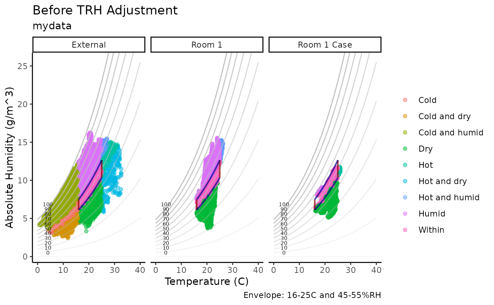

mydata: Built-in Example Dataset
This dataset contains environmental monitoring data collected from example heritage sites.
It includes measurements of temperature (°C) and relative humidity (%) recorded by sensors over time.
| Variable | Description |
|---|---|
| Site | Location name, e.g., “Museum”, “London” |
| Sensor | Identifier for the specific sensor |
| Date | Timestamp of the measurement (POSIXct format) |
| Temp | Air temperature in degrees Celsius |
| RH | Relative humidity as percentage (0-100%) |
Example usage to load the dataset from the package:
#> # A tibble: 6 × 5
#> Site Sensor Date Temp RH
#> <chr> <chr> <dttm> <dbl> <dbl>
#> 1 London Room 1 2024-01-01 00:00:00 21.8 36.8
#> 2 London Room 1 2024-01-01 00:15:00 21.8 36.7
#> 3 London Room 1 2024-01-01 00:29:59 21.8 36.6
#> 4 London Room 1 2024-01-01 00:44:59 21.7 36.6
#> 5 London Room 1 2024-01-01 00:59:59 21.7 36.5
#> 6 London Room 1 2024-01-01 01:14:59 21.7 36.2TRHgrid: Dataset used to visualise the functions
This dataset consists of a grid of temperature and relative humidity values used to visualize function behavior. Temperatures range from 0°C to 100°C in 0.25°C increments, and relative humidity (RH) ranges from 0% to 100% in 1% increments. The complete factorial combination of temperature and RH values is created using expand.grid(), where each pair represents a unique condition.
Contour plots are generated to show interactions between derived variables across the temperature-RH grid. The dataset also supports validation checks for temperature and humidity calculations to understand relationships among the functions.
Example R code to generate the dataset:
#> Temp RH
#> Min. : 0 Min. : 0
#> 1st Qu.: 25 1st Qu.: 25
#> Median : 50 Median : 50
#> Mean : 50 Mean : 50
#> 3rd Qu.: 75 3rd Qu.: 75
#> Max. :100 Max. :100